Azalo.net
Создание структуры и рабрта с дизайнами
Страница проекта
В данном разделе мы рассмотрим страницу проекта более детально.
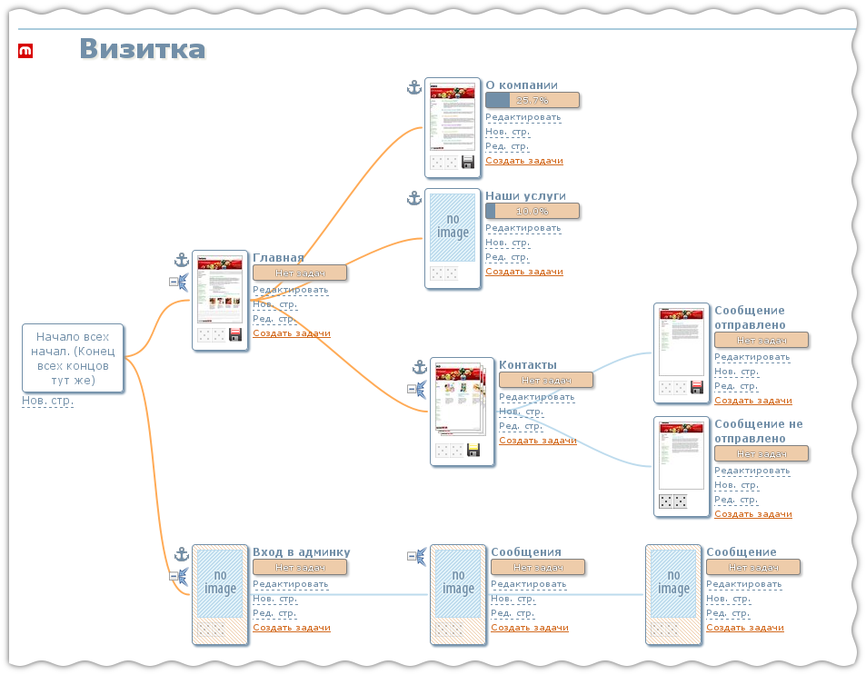Прямоугольники представляют собой будущие страницы сайта.
Каждая страница может принадлежать, либо к публичной стороне сайта, либо к админке.
Страница публичной стороны имеет белый фон, страница админской части - имеет
розовую штриховку на фоне:
При наведении мышки на квадратик страницы, всплывает окно. Его вид может несколько меняться, в зависимости от того какие изображения уже добавлены на страницу:
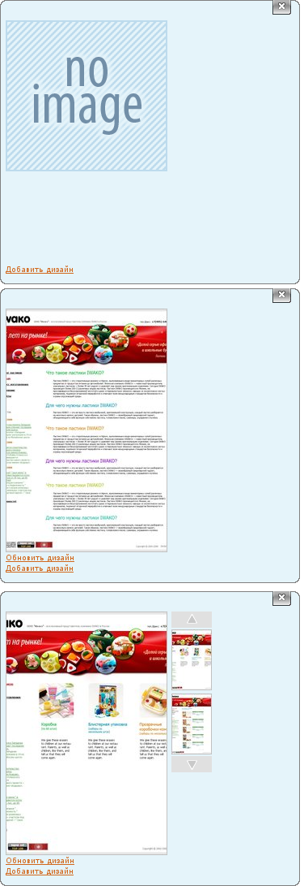В первом случае для страницы еще не был добавлен дизайн, во втором случае добавлен один дизайн и загружено одно изображение, и в последнем случае - два дизайна и два изображения. В последнем варианте можно щелкать мышью по маленьким картинкам справа и соответвенно изменится более крупное изображение в центре. Аналогично ссылка "Обновить дизайн" отностится к тому изображению, которое выбрано и отображается укрупненным.
Также на страничке или рядом расположены следующие элементы:
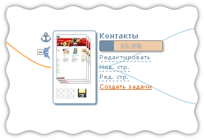Изображения в центре
Центральная часть "коробки" - это уменьшенное изображение дизайна страницы. Может принимать различный вид в зависимоти от ряда условий.
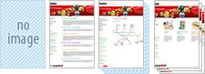- В первом случае для страницы не создан дизайн или создан, но не загружена картинка с дизайном
- Во втором случае создан дизайн и загружено изображение
- В третьем случае для для страницы указано более одного дизайна, но не все изображения загружены
- В полсднем случае, для страницы более одного дизайна и все изображения загружены
Якорь
Якорь 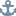 - эта иконка используется для изменения структуры сайт. Потянув якорь и затем бросив его на другой страница можно изменить родителя данной страницы. Родителем станет та страница, на которую был брошен якорь.
Подробнее об этом будет рассказано ниже.
Свернуть-развернуть
Иконки свернуть-развернуть поддерево - используется что бы скрыть или вновь показадь поддерево.
Домино
Доминошка "дубль пять"  . Позволяет указать, что страница дублирует дизайн
(см. "Дубликат дизайна" в терминах и определениях). Поведение подобно якорю:
потянуть и бросить на ту страницу с которй мы хотим взять дизайн.
Страница котроая дублирует дизайн имеет более контрастную доминошку.
На данный момент нет наглядного способа найти страницу-донора дизайна,
это будет исправлено в дальнейшем. Для того чтоб отказаться от дублирования
дизайна необходимо доминошку бросить на коробочку "Начало всех начал"
. Позволяет указать, что страница дублирует дизайн
(см. "Дубликат дизайна" в терминах и определениях). Поведение подобно якорю:
потянуть и бросить на ту страницу с которй мы хотим взять дизайн.
Страница котроая дублирует дизайн имеет более контрастную доминошку.
На данный момент нет наглядного способа найти страницу-донора дизайна,
это будет исправлено в дальнейшем. Для того чтоб отказаться от дублирования
дизайна необходимо доминошку бросить на коробочку "Начало всех начал"
Дискета
Дискета 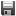  - отражает состояние загруженных исходников дизайна. Если для
страницы еще не создан дизайн (страничка с голубой картинкой "no image"),
дискета не отображается. Если для страницы указано что есть дизайн,
но не загружен исходник, дискета будет красной. Если указан дизайн и
заружен исходник - дискета будет серой. Если для страницы указано
несколько дизайнов, но загружены не все - дискета будет желтой
- отражает состояние загруженных исходников дизайна. Если для
страницы еще не создан дизайн (страничка с голубой картинкой "no image"),
дискета не отображается. Если для страницы указано что есть дизайн,
но не загружен исходник, дискета будет красной. Если указан дизайн и
заружен исходник - дискета будет серой. Если для страницы указано
несколько дизайнов, но загружены не все - дискета будет желтой
Название страницы
Справа сверху - название страницы. Для данной картинки - "Контакты"
Прогресс
Прогресс по задачам 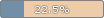 отображает суммарный прогресс по задачм, связанным с данной страницей. Прогесс вычисляется на основании оставшегося времени для завершения задач, а не вычислением среднего арифметического процентов выполнения задач. При наведении мыши на индикатор прогресса, пяовляется окно с развернутой информацией о задачах:
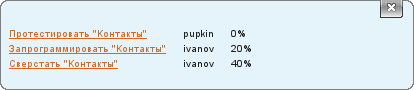В этом окне предствален список задач, кому назначена задачи прогресс по задаче. Каждая задача - это ссылка ведущая на отдельную страницу в Redmine
Редактирование
Редактирование включает в себя два пункта: "Редактировать" и "Ред. стр.". Вот так всё не просто. Будет исправлено.
Пункт "Редактировать" позволяет удалить страницу (и все дочерние элементы, если они есть) и показать страницу детально. Последнее действие эквивалентно щелчку по квадратику страницы. "Ред. стр." - позволяет изменить название и тип (админка-юзерка) страницы.
Изменение типа страницы имеет смысл только для корневых страниц, привязанных к "Началу всех начал". В дальнейшем галочка с изменением типа страниц не будет отображаться не у корневых страниц
Создать задачи
Этот пункт создает в Redmine задачи в соответсвии со списком задач на странице "Задачи".
Если задачи уже были созданы, они будут удалены и созданы заново.
Создание нового проекта
Создание нового проекта не должно вызвать сложностей. Для этого необходио зайти в список сайтов, нажать "Новый сайт", ввести имя и нажать кнопку "Создать":

После должна появится страница с почти пустым проектом:
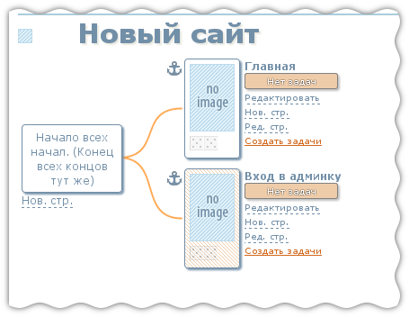Сразу после создания сайт содержит 2 страницы: юзерскую - "Главная" и админскую "Вход в админку". Как говорилось раньше админская страница выделеяется розовой штриховкой.
Под "Началом всех начал" (коробок слева), кнопка ссылка "Нов. стр.", при использовании которой появлеяется окошко следующего вида:
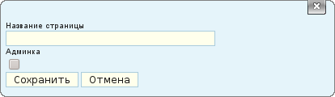Тут можно ввести имя страницы и указать её тип: админка или юзерка. Так же можно создать страницу являющуюся дочерней по отношению к другой странице. Для этого есть такая же ссылка "Нов. стр." рядом с "коробкой" страницы
При создании дочерней страницы галочка "Админка" не играет значения. Тип страницы будет определен по родительской странице. В дальнейшем при создании дочерней страницы галочка будет убрана.
Изменение структуры сайта
Для того что бы изменять структуру используется якороек, который расположен слева сверху от "коробки" страницы.
Допустим у нас есть следующая структура сайта:
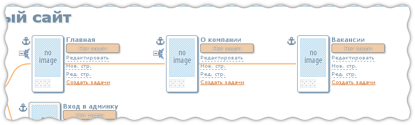И предположим, что необходимо сделать, так, чтоб "Вакансии" были на том же уровне, что и страница "О компании". Для этого необходимо якорек страницы "Вакансии" потянуть и бросить на старницу "Главная":
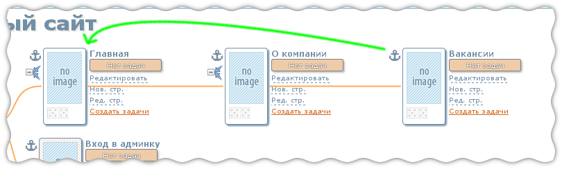В результате этих действий мы получим стрктуру такого вида:
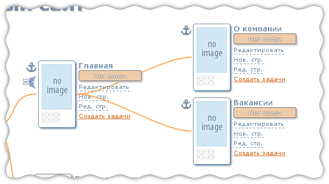Для того, чтоб страницу вынести на один уровень с "Главной", необходимо бросить якорь на "Начало всех начал"
TODO Не описана страница страницыСодержание